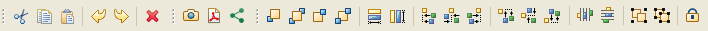
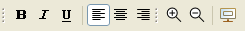

The Toolbar exposes various quick editing actions:


Actions in order of their appearance are:
The toolbar can be customized to remove unwanted entries. This is especially important if you are using WireframeSketcher inside an IDE. To do this, right-click on the toolbar, choose Customize Perspective… and then uncheck all unwanted items in Tool Bar Visibility section.
Next: Context Menu